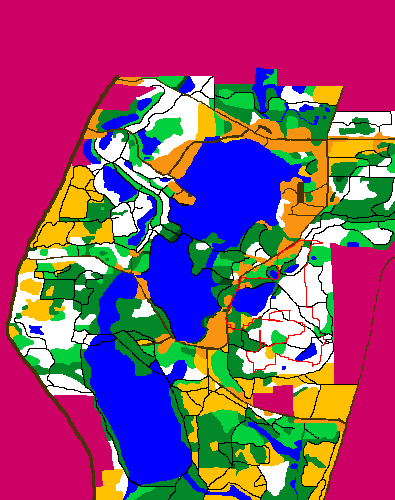

All of my projects are available on my GitHub page accessible via the nav bar
Finds the best path within a 3 dimensional space between a given list of x,y coordinate pairs. The 3D space has different types of terrains represented by each color. Uses A star search algorithm to determine the best path from each coordinate.
A machine learning based program that given a 15 word segment of either Dutch or English words will make a prediction based on several attributes regarding the input. It uses decision tree training to make the tree for its prediction.
My first website! We used Angular for the front end and
Java for the backend API. The website functions sort of like GoFundMe.
Users can login in as Helpers or Managers.
Managers are able to add/remove needs for the people struggling
in Palestine.

Helpers are able to select needs and add them to their "funding basket" which they can then checkout
with and actually donate to the people in need.